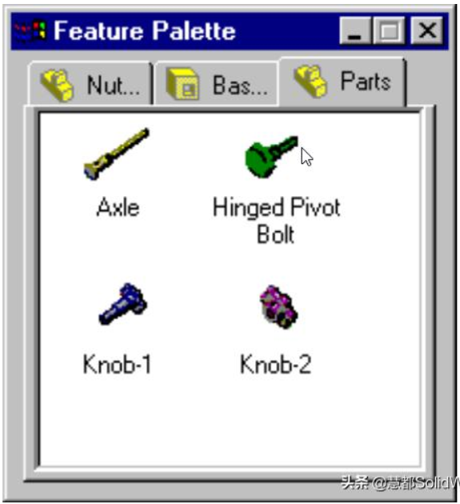
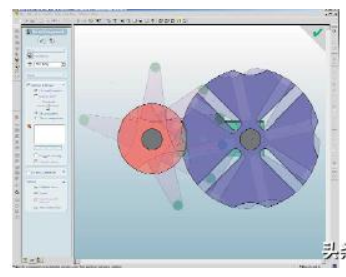
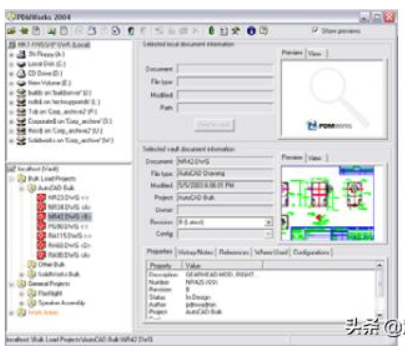
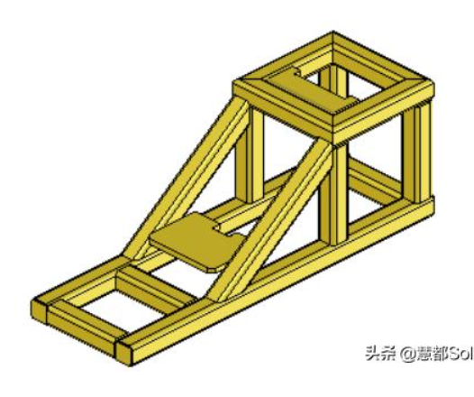

Nx <<
Previous Next >> About
solidworks

1993年
創始人Jon Hirschtick招募了一個工程師團隊，旨在使3D CAD軟體更容易上手。Hirschtick從廣受好評的麻省理工學院二十一點隊的成員中籌得100萬美元，開始了他的新事業。該團隊的目標是構建一個基於Windows平台的易於使用且價格合理的軟體。這在當時真的是革命性的存在，當時所有其他流行的CAD系統都是在Unix上構建的。經過幾年的開發，最初發布的SolidWorks終於來了。
1995年
1.與其他CAD系統的18,000美元相比，SolidWorks的售價僅為4,000美元。
2.該軟體更易於使用：與市場上其他CAD軟體相比，用戶只需3個月的使用經驗就可以輕
3.鬆上手。易用性的很大一部分原因在於它採用了現代著名的Windows介面。
4.模型的可視化是前所未有的。在光線充足的陰影環境中的構建功能與傳統建模空間形成
5.鮮明對比，傳統建模空間僅顯示黑色背景下的線框。
6.我們現在熟悉的類似FeatureManager用於顯示模型的構建歷史。
7.零件，組件和圖紙從一開始就可用。用戶無法在組件中應用配合，但仍可將組件放置到位。

1996年
1.介紹了上下建模。允許使用自上而下的裝配建模方法。
2.用戶現在可以在裝配中使用配合併捕捉動態裝配運動。除了干擾檢測，用戶還可以更輕
3.鬆地驗證形狀，適合度和功能。
4.拖放功能可將一個裝配體零部件移動到另一個裝配體中。部分配置。
5.自動化物料清單。只有一種方法沒有自定義選項，但它很有效。
1997年
1.鈑金功能首次發布。
2.標準庫功能推出。
3.Loft功能現在可以使用引導曲線。
4.SolidWorks 被 Dassault Systemes（達索公司）收購。
1997年二次修改
1.面部圓角介紹。
2.裝配配置。
3.完全可定製的組件爆炸視圖。
4.SolidWorks Viewer作為免費產品推出，可與非CAD用戶共享設計，並在與外部方共享
5.數據時保護智慧財產權。
1998年
1.已發布功能面板，現在與設計庫的功能類似。可以拖放到模型上的預製功能。
2.草圖診斷可幫助用戶理解草圖不適用於特定特徵的原因。
3.Lofts和Sweeps的相切控制。
4.組合件封包(Assembly Envelopes)。

1998二次修改
1.智能配合在建造組件中更多地使用拖放式自動化。
2.隨著用戶不斷建造越來越大的組件，輕量級組件可以幫助提高性能。
3.表面處理工具首次推出。
4.FeatureWorks用於導入文件，能夠更有效地使用來自其他軟體的現有3D數據。
5.首次CSWP考試發布。它是手寫的，並通過郵件發送。
1999年
1.Palm Springs的第一個SolidWorks World。
2.拖動組件時對組件的實時碰撞檢測。
3.3D草圖介紹。
4.管道模塊發布。
5.2D命令模擬器有助於縮小與以前AutoCAD用戶的差距。
2000年
1.發布eDrawings。
2.實現了Hole Wizard接口。
3.表面處理更有用，能夠編織，修剪和延伸表面。
4.SolidWorks Explorer。
5.動態間隙檢測可驗證裝配部件之間的最小間隙。
2001年
1.鏡像組件中的組件。
2.引領互動。以前，在任何CAD系統中，只要選擇了命令，軟體就會在模型頂部顯示整個
3.對話框。SOLIDWORKS開始廢除這一點，並轉向我們現在知道的
4.PropertyManagers，並將陰影標註返回到模型。
5.現在允許靈活的子組件進一步捕捉準確的裝配運動。
6.介紹填充表面命令。
7.DXF / DWG導入嚮導發布。
8.3D Meeting（3D會議），最終在幾個版本之後退出。利用Microsoft Live Meeting並允許與螢幕共享進行實時同步會議。
2001年二次修改

1.運動模擬功能現在可以捕捉組件中移動的組件的實際物理動態。
2.介紹大型裝配模式。
3.實現了2D到3D轉換工具，以便將2D CAD數據輕鬆轉換為功能齊全的3D模型。
4.介紹SolidWorks Office，將常用的插件如PhotoWorks，Toolbox，Utilities和
5.FeatureWorks打包成一個產品。
6.Dassault Systemes收購了SRAC並開始將仿真引入主流設計流程。
2003年
1.COSMOSXpress是第一款Xpress產品，它為每個桌面帶來了簡單的零件驗證。
2.3DContentCentral為用戶提供了一個交互和共享模型的社區。
3.多體零件設計。這是一個非常大的問題，現在是焊接，鈑金和模具設計的基礎。
4.收購了PDMWorks並引入了SolidWorks Office Professional軟體包。開始將PDM作為
5.每個客戶提供的一部分。

2004年
1.介面更新，包括CommandManager，彈出FeatureManager和PropertyManager和
2.ConfigurationManager的管理器視圖選項卡。
3.介紹了Mold Tools（模具工具）和Weldments（焊件）。
4.實施Auto Balloon命令以匹配物料清單物料編號中的balloon編號。
5.限制配合以捕捉更複雜的裝配運動。
6.推出了RealView Graphics，以便隨時提供更逼真的圖像。

Nx <<
Previous Next >> About